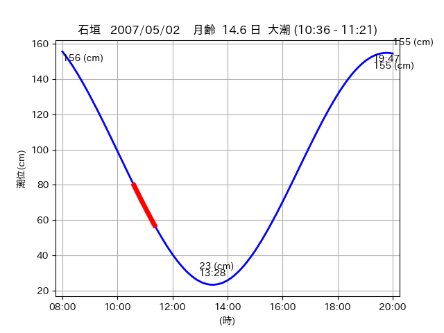
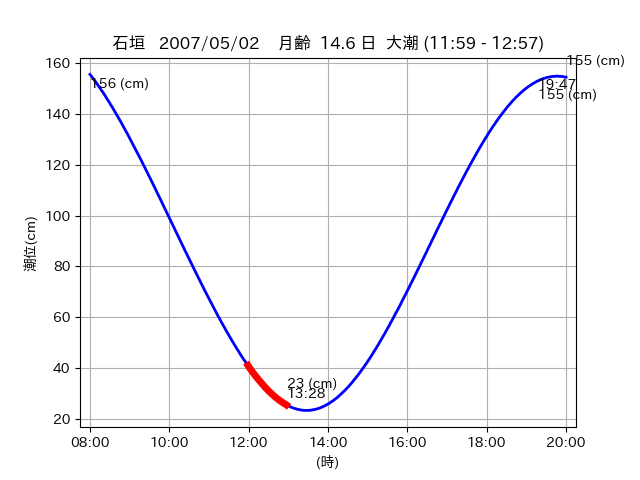
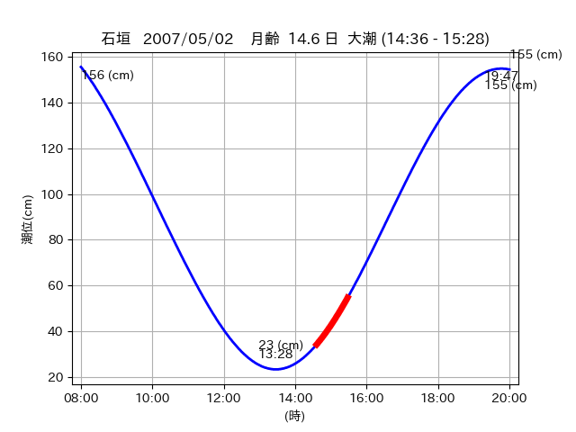

<!DOCTYPE html>
<html>
<head>
    
    <meta http-equiv="content-type" content="text/html; charset=UTF-8" />
    
        <script>
            L_NO_TOUCH = false;
            L_DISABLE_3D = false;
        </script>
    
    <style>html, body {width: 100%;height: 100%;margin: 0;padding: 0;}</style>
    <style>#map {position:absolute;top:0;bottom:0;right:0;left:0;}</style>
    <script src="https://cdn.jsdelivr.net/npm/leaflet@1.9.3/dist/leaflet.js"></script>
    <script src="https://code.jquery.com/jquery-3.7.1.min.js"></script>
    <script src="https://cdn.jsdelivr.net/npm/bootstrap@5.2.2/dist/js/bootstrap.bundle.min.js"></script>
    <script src="https://cdnjs.cloudflare.com/ajax/libs/Leaflet.awesome-markers/2.0.2/leaflet.awesome-markers.js"></script>
    <link rel="stylesheet" href="https://cdn.jsdelivr.net/npm/leaflet@1.9.3/dist/leaflet.css"/>
    <link rel="stylesheet" href="https://cdn.jsdelivr.net/npm/bootstrap@5.2.2/dist/css/bootstrap.min.css"/>
    <link rel="stylesheet" href="https://netdna.bootstrapcdn.com/bootstrap/3.0.0/css/bootstrap-glyphicons.css"/>
    <link rel="stylesheet" href="https://cdn.jsdelivr.net/npm/@fortawesome/fontawesome-free@6.2.0/css/all.min.css"/>
    <link rel="stylesheet" href="https://cdnjs.cloudflare.com/ajax/libs/Leaflet.awesome-markers/2.0.2/leaflet.awesome-markers.css"/>
    <link rel="stylesheet" href="https://cdn.jsdelivr.net/gh/python-visualization/folium/folium/templates/leaflet.awesome.rotate.min.css"/>
    
            <meta name="viewport" content="width=device-width,
                initial-scale=1.0, maximum-scale=1.0, user-scalable=no" />
            <style>
                #map_6d5c510c26f03247daef9c36f7ba412b {
                    position: relative;
                    width: 2048.0px;
                    height: 1600.0px;
                    left: 0.0%;
                    top: 0.0%;
                }
                .leaflet-container { font-size: 1rem; }
            </style>
        
</head>
<body>
    
    
            <div class="folium-map" id="map_6d5c510c26f03247daef9c36f7ba412b" ></div>
        
</body>
<script>
    
    
            var map_6d5c510c26f03247daef9c36f7ba412b = L.map(
                "map_6d5c510c26f03247daef9c36f7ba412b",
                {
                    center: [24.072, 123.792],
                    crs: L.CRS.EPSG3857,
                    ...{
  "zoom": 12,
  "zoomControl": true,
  "preferCanvas": false,
}

                }
            );

            

        
    
            var tile_layer_20311568cc0174c757145123cac30dd5 = L.tileLayer(
                "https://cyberjapandata.gsi.go.jp/xyz/seamlessphoto/{z}/{x}/{y}.jpg",
                {
  "minZoom": 0,
  "maxZoom": 18,
  "maxNativeZoom": 18,
  "noWrap": false,
  "attribution": "\u5730\u7406\u9662\u5730\u56f3",
  "subdomains": "abc",
  "detectRetina": false,
  "tms": false,
  "opacity": 1,
}

            );
        
    
            tile_layer_20311568cc0174c757145123cac30dd5.addTo(map_6d5c510c26f03247daef9c36f7ba412b);
        
    
            var marker_c61e8ed2359458334107b15264262214 = L.marker(
                [24.0427, 123.7821],
                {
}
            ).addTo(map_6d5c510c26f03247daef9c36f7ba412b);
        
    
            var icon_a30f724d64dd6a074fb739cde7e36d71 = L.AwesomeMarkers.icon(
                {
  "markerColor": "orange",
  "iconColor": "white",
  "icon": "info-sign",
  "prefix": "glyphicon",
  "extraClasses": "fa-rotate-0",
}
            );
        
    
        var popup_c2969a5758aa2fada161c02393cf45ce = L.popup({
  "maxWidth": "100%",
});

        
            
                var html_7de496fef16bb403d4f4e48df9aa108a = $(`<div id="html_7de496fef16bb403d4f4e48df9aa108a" style="width: 100.0%; height: 100.0%;"><table><tr><td></td></tr><tr><td><center>20070502 No.1 </center></table></td></tr></table</div>`)[0];
                popup_c2969a5758aa2fada161c02393cf45ce.setContent(html_7de496fef16bb403d4f4e48df9aa108a);
            
        

        marker_c61e8ed2359458334107b15264262214.bindPopup(popup_c2969a5758aa2fada161c02393cf45ce)
        ;

        
    
    
                marker_c61e8ed2359458334107b15264262214.setIcon(icon_a30f724d64dd6a074fb739cde7e36d71);
            
    
            var poly_line_cfc7e91ce7052a727289dfa5a51ec53d = L.polyline(
                [[24.0427, 123.7821], [24.0408, 123.7865]],
                {"bubblingMouseEvents": true, "color": "#00FFFF", "dashArray": null, "dashOffset": null, "fill": false, "fillColor": "#00FFFF", "fillOpacity": 0.2, "fillRule": "evenodd", "lineCap": "round", "lineJoin": "round", "noClip": false, "opacity": 1.0, "smoothFactor": 1.0, "stroke": true, "weight": 3}
            ).addTo(map_6d5c510c26f03247daef9c36f7ba412b);
        
    
            var marker_dcf6d83e1b6f7ebec16b654019607b9b = L.marker(
                [24.0723, 123.7528],
                {
}
            ).addTo(map_6d5c510c26f03247daef9c36f7ba412b);
        
    
            var icon_c74f06ca66ebd6752d9f23aa059ca71b = L.AwesomeMarkers.icon(
                {
  "markerColor": "orange",
  "iconColor": "white",
  "icon": "info-sign",
  "prefix": "glyphicon",
  "extraClasses": "fa-rotate-0",
}
            );
        
    
        var popup_7d35c6bf1602432d416f10b8d4f0a787 = L.popup({
  "maxWidth": "100%",
});

        
            
                var html_57f1a87d3a88b66a794eac9e4ba89246 = $(`<div id="html_57f1a87d3a88b66a794eac9e4ba89246" style="width: 100.0%; height: 100.0%;"><table><tr><td></td></tr><tr><td><center>20070502 No.2 </center></table></td></tr></table</div>`)[0];
                popup_7d35c6bf1602432d416f10b8d4f0a787.setContent(html_57f1a87d3a88b66a794eac9e4ba89246);
            
        

        marker_dcf6d83e1b6f7ebec16b654019607b9b.bindPopup(popup_7d35c6bf1602432d416f10b8d4f0a787)
        ;

        
    
    
                marker_dcf6d83e1b6f7ebec16b654019607b9b.setIcon(icon_c74f06ca66ebd6752d9f23aa059ca71b);
            
    
            var poly_line_90f223db784535cca96a1c027d119338 = L.polyline(
                [[24.0723, 123.7528], [24.0717, 123.7476]],
                {"bubblingMouseEvents": true, "color": "#00FFFF", "dashArray": null, "dashOffset": null, "fill": false, "fillColor": "#00FFFF", "fillOpacity": 0.2, "fillRule": "evenodd", "lineCap": "round", "lineJoin": "round", "noClip": false, "opacity": 1.0, "smoothFactor": 1.0, "stroke": true, "weight": 3}
            ).addTo(map_6d5c510c26f03247daef9c36f7ba412b);
        
    
            var marker_4fa2279cc1b93380aa04b84e606a675f = L.marker(
                [24.0712, 123.7955],
                {
}
            ).addTo(map_6d5c510c26f03247daef9c36f7ba412b);
        
    
            var icon_5df1541af363d356dae9a968c046cf2e = L.AwesomeMarkers.icon(
                {
  "markerColor": "orange",
  "iconColor": "white",
  "icon": "info-sign",
  "prefix": "glyphicon",
  "extraClasses": "fa-rotate-0",
}
            );
        
    
        var popup_506870306fea21bf082b9382ce53b512 = L.popup({
  "maxWidth": "100%",
});

        
            
                var html_101645f6f005fa2e53babe50ca3e3d17 = $(`<div id="html_101645f6f005fa2e53babe50ca3e3d17" style="width: 100.0%; height: 100.0%;"><table><tr><td></td></tr><tr><td><center>20070502 No.3 </center></table></td></tr></table</div>`)[0];
                popup_506870306fea21bf082b9382ce53b512.setContent(html_101645f6f005fa2e53babe50ca3e3d17);
            
        

        marker_4fa2279cc1b93380aa04b84e606a675f.bindPopup(popup_506870306fea21bf082b9382ce53b512)
        ;

        
    
    
                marker_4fa2279cc1b93380aa04b84e606a675f.setIcon(icon_5df1541af363d356dae9a968c046cf2e);
            
    
            var poly_line_3dd2856a4741635ae9efae72014d790a = L.polyline(
                [[24.0712, 123.7955], [24.0737, 123.7884]],
                {"bubblingMouseEvents": true, "color": "#FF00FF", "dashArray": null, "dashOffset": null, "fill": false, "fillColor": "#FF00FF", "fillOpacity": 0.2, "fillRule": "evenodd", "lineCap": "round", "lineJoin": "round", "noClip": false, "opacity": 1.0, "smoothFactor": 1.0, "stroke": true, "weight": 3}
            ).addTo(map_6d5c510c26f03247daef9c36f7ba412b);
        
</script>
</html>